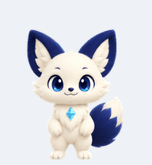
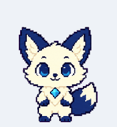

Woogi
Soft 3D style

Add to CodexAn animated fox companion for the Codex desktop app.
Choose your favorite style below.
Soft 3D style

Add to CodexCrisp pixel art

Add to CodexRequires the Codex desktop app with Pets enabled and an internet connection. No terminal needed.
Update and launch Codex, then try again and allow your browser to open the app. Check that Pets is available in Settings; older versions may list it under Appearance.
You can also use an install script or read the official Pets guide.